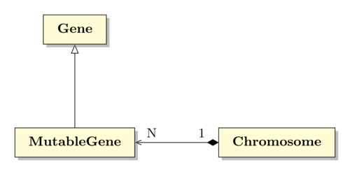

Examen de prácticas (C3)
Table of ContentsClose
1. Información
- El examen tendrá una duración máxima de 2'5 horas, desde las 10:00 a las 12:30.
- Todo el código se escribirá en lenguaje C++ y se corregirá con la versión del compilador instalado en los laboratorios de la EPS.
- El
Makefileque tienes disponible te permite crear el archivo para la entrega así:make tgz, como has hecho en las prácticas. También te permite compilar el código así:make p1. - Dispones de un programa principal de prueba:
mainp1.cc. - Un error de compilación/enlace implicará un cero en la pregunta donde se produzca, por tanto asegúrate de que tu código compila correctamente aunque determinadas funciones no hagan nada o no lo hagan bien.
- Puedes hacer tantas entregas como quieras, sólo se corregirá la última. Las entregas son similares a las que has hecho durante el curso con las prácticas: https://pracdlsi.dlsi.ua.es. Recuerda ir haciendo entregas parciales mientras esté abierto el plazo de entrega, no se admiten entregas por ningún otro cauce ni fuera de plazo.
Para que te hagas una idea de la cantidad de código a escribir, cada archivo
.ccpedido ocupa, más o menos, esta cantidad de líneas:104 chromosome.cc 76 gene.cc 45 mutablegene.cc Si a ti te ocupan un número distinto de líneas, es normal, no pasa nada.
- No se permiten apuntes en el examen, ni teléfono móvil, smartwatch, memorias usb o similar. Se expulsará del examen a cualquiera que incumpla esta norma.
- Puedes usar bolígrafo y papel en blanco para ayudarte en el desarrollo de los problemas.
- Ten tu DNI disponible para poder identificarte.
2. Ejercicio
Dada la siguiente estructura de clases representada mediante un diagrama UML:

Se pide:
- Escribir el contenido de los archivos
gene.cc,mutablegene.ccychromosome.cccomo en las prácticas hechas durante el curso. - Para ello debes implementar todos los métodos indicados en el
fichero
.hcorrespondiente.
2.1. Gene
- Un
Genestá representado por un carácter de entre una serie de caracteres válidos. - Los métodos de la clase
Genehacen lo siguiente:Gene(char d);: Inicializa un gen a partir de un carácter. Tiene el mismo comportamiento queset_data.Gene(const Gene& g);: Inicializa un gen a partir de otro gen. Tiene el mismo comportamiento queset_data.void set_data (char d);: Dado el juego de caracteres permitidos:"abcdefghijklmnopqrstuvwxyzABCDEFGHIJKLMNOPQRSTUVWXYZ0123456789",- si el carácter
destá entre ellos, asigna ese carácter a la variable de instancia del Gen y emite la señalon_data_changedpasándole como argumentos el puntero al gen actual, el valor antiguo que había en su variable data y el nuevo valor de ésta. - si no, elige un carácter al azar de entre los permitidos y lo almacena en la variable de instancia del Gen. No hace nada más en este caso.
- si el carácter
char get_data () const;: Devuelve el carácter almacenado en el Gen.void set_random_data ();: Elige un carácter al azar de entre los permitidos y lo almacena en la variable de instancia del Gen.operator char () const;: Convierte un Gen en un carácter.friend ostream& operator << (ostream& os, const Gene& g);
2.2. MutableGene
- Un
MutableGenederiva de y representa unGencuyo carácter puede cambiar aleatoriamente con una probabilidadmr. - Los métodos de la clase
MutableGenehacen lo siguiente:MutableGene(char c);: Constructor a partir de un carácter.MutableGene(const MutableGene& g);: Constructor a partir de otroMutableGene.void mutate_data(float mr);: Dada una probabilidadmr, , mutará/cambiará con esa probabilidad el carácter actual de esteMutableGenepor otro al azar de entre el juego de caracteres válidos.
2.3. Chromosome
- Un
Chromosomerepresenta una colección de genes mutables junto a una cadena de caracteres objetivo o target string ots. La longitud de esta cadena siempre será igual al número de genes que tiene el cromosoma. - La idea es que si construimos un
Chromosomecon una cadena inicial objetivo, el cromosoma creará tantosMutableGenecomo caracteres tiene esta cadena. El carácter inicial de cada uno de estos genes será un carácter al azar. - Dado que cada gen del cromosoma contiene un carácter, podemos construir una cadena concatenando todos estos caracteres. La longitud de esta cadena será igual a la longitud de la cadena objetivo.
- Lo que se pretende es comprobar si al ir mutando individualmente cada uno de estos genes durante un cierto tiempo y con una cierta probabilidad podemos conseguir formar una cadena igual a la cadena objetivo.
- Sus métodos hacen lo siguiente:
Chromosome (string& tstr);: Crea un cromosoma con la cadena objetivotstr. Deberá crear tantos genes mutables como caracteres tenga esta cadena. El carácter inicial de cada uno de ellos será un carácter de entre el juego de caracteres válido.Chromosome (const char* tstr);: Idem al anterior pero sobrecargado para un dato literal cadena de caracteres.~Chromosome ();: Libera la memoria ocupada por los genes de este cromosoma.string target () const;: Devuelve la cadena objetivo.uint32_t fitness () const;: Indica la aptitud de este cromosoma. Dada la cadena objetivo y la cadena formada por los caracteres de los genes de este cromosoma, nos devuelve el número de posiciones en las que no coincide el carácter de una en la otra. Por ejemplo, a título ilustrativo, sifitnessfuera una función que recibe dos cadenas:fitness("hola", "bola") == 1,h!=bfitness("teclado", "esalado") == 3,t/e,e/s,c/afitness("hola", "hola") == 0
void show_genes (ostream& os) const;: Aplica el operador<<a cada uno de los genes del cromosoma.string get_genes () const;: Devuelve una cadena formada por la concatenación de los caractéres que hay en los genes del cromosoma.uint32_t size();: Devuelve el número de genes que hay en el cromosoma.void evolve (float mr);: Hace que cada gen del cromosoma mute con una probabilidadmry al finalizar emite la señalon_evolve. Esta señal recibe como argumento el puntero al cromosoma que la emite.void create_genes ();: Crea e inicializa con un carácter al azar cada uno de los genes de este cromosoma. Recuerda que habrá tantos genes como caracteres tenga la cadena objetivo.void free_gene_list (vector<MutableGene*>& l);: Liberará la memoria ocupada por cada uno de los genes del cromosoma y dejará este cromosoma sin ningún gen.
2.4. Ayuda
- Implementa los nuevos archivos
.ccen este orden, te será más sencillo:gene.ccmutablegene.ccchromosome.cc
- Crea inicialmente una versión vacía de cada función/método que devuelva un valor cualquiera del tipo de dato pedido, esto te permitirá tener código que compila aunque no haga todavía lo que se pide.
Una vez creado un fichero
.ccpuedes comprobar si compila bien así:make gene.o make mutablegene.o make chromosome.o
- Puedes crear las funciones auxiliares que necesites en cada fichero
.cc. Deberán pertenecer al espacio de nombresC3. - Dispones de un programa principal de prueba (
mainp1.cc) y puedes compilarlo con ayuda delMakefileasí:make p1, y ejecutarlo así:make runp1omake valgrindp1, de esta última forma comprobarás que no deja memoria sin liberar. Una posible salida producida por
mainp1.ccpodría ser esta:============= GENE ============ g: h g as char: h ============= MUTABLE GENE ============ mg: a now mutate 10 times with mr = 20% mg : a mg : a mg : a mg : a mg : a Data changed from: a to: M mg : M mg : M mg : M mg : M mg : M ============= CHROMOSOME ============ Crm target length: 13 Crm genes length: 13 Crm target: [hoyes9dejunio] Crm genes: [n2L9K88eMlGn7] Crm fitness: [12] Evolve 10 times. Evolved Chromosome (0x7fff935eaf80) Crm genes: [ctLRK8BeMlWn7] Crm fitness: [12] Evolved Chromosome (0x7fff935eaf80) Crm genes: [ct5RKyB3MlWa7] Crm fitness: [13] Evolved Chromosome (0x7fff935eaf80) Crm genes: [9t5RXyB3Mlwa7] Crm fitness: [13] Evolved Chromosome (0x7fff935eaf80) Crm genes: [9U5RXcB3Mjwa7] Crm fitness: [13] Evolved Chromosome (0x7fff935eaf80) Crm genes: [9U5RXcB3MjYap] Crm fitness: [13] Evolved Chromosome (0x7fff935eaf80) Crm genes: [9U5AXcaBMBDap] Crm fitness: [13] Evolved Chromosome (0x7fff935eaf80) Crm genes: [9U5AXciBWBvsR] Crm fitness: [13] Evolved Chromosome (0x7fff935eaf80) Crm genes: [Rt5AXciBtBo3R] Crm fitness: [13] Evolved Chromosome (0x7fff935eaf80) Crm genes: [RtkAdu67tBF3R] Crm fitness: [13] Evolved Chromosome (0x7fff935eaf80) Crm genes: [RtkAduO7tBF3R] Crm fitness: [13] Crm show_genes: RtkAduO7tBF3R
Aquí tienes un ejemplo de uso de
boost::signals2:#include <iostream> #include <boost/signals2.hpp> void my_slot () { std::cout << "slot example\n"; } class Car { public: void out_of_gas_cb () { std::cout << "Gas needed!\n"; } }; int main() { boost::signals2::signal<void ()> sig; Car c; sig.connect(my_slot); sig(); }
2.5. Aclaraciones
- Todas las clases pertenecen al espacio de nombres
C3. Cualquier función auxiliar que definas deberá estar dentro de este espacio de nombres para evitar colisiones. - Para la generación de números aleatorios recuerda que puedes usar
la función
int std::rand();declarada en<cstdlib>. Esta función devuelve un valor entre0 yRAND_MAXincluidos.
3. Requisitos técnicos
- Requisitos que tiene que cumplir este trabajo práctico para considerarse válido y ser evaluado (si no se cumple alguno de los requisitos la calificación será cero):
Al principio de todos los ficheros fuente (
.cc) entregados se debe incluir un comentario con el nombre y el NIF (o equivalente) de la persona que entrega el examen, como en el siguiente ejemplo:// NIF: 12345678X // NOMBRE: PEREZ GARCIA, ALEJANDRO
El archivo entregado se llama
irp2-c3.tgz(todo en minúsculas). En el estarán todos los ficheros.ccpedidos en una carpeta llamadairp2-c3.Si por algún motivo entregas los ficheros
.h,mainp1.cc,Makefile, etc… no pasa nada.
- Las clases, métodos y funciones implementados se llaman como se indica en el enunciado (respetando en todo caso el uso de mayúsculas y minúsculas). También es imprescindible respetar estrictamente los textos y los formatos de salida que se indican en este enunciado.
4. Lugar y plazo de entrega
La entrega se realiza en https://pracdlsi.dlsi.ua.es. Allí puedes ver el plazo de entrega.
Puedes entregar el examen tantas veces como quieras mientras el plazo de entrega esté abierto, sólo se corregirá la última entrega (las anteriores no se borran).
El usuario y contraseña para entregar prácticas es el mismo que se utiliza en UACloud.
5. Detección de plagios/copias
- El examen debe ser un trabajo original de la persona que lo entrega.
- En caso de detectarse indicios de copia en el examen entregado, se tomarán las medidas disciplinarias correspondientes, informando a la dirección del DLSI por si hubiera lugar a otras medidas disciplinarias adicionales.